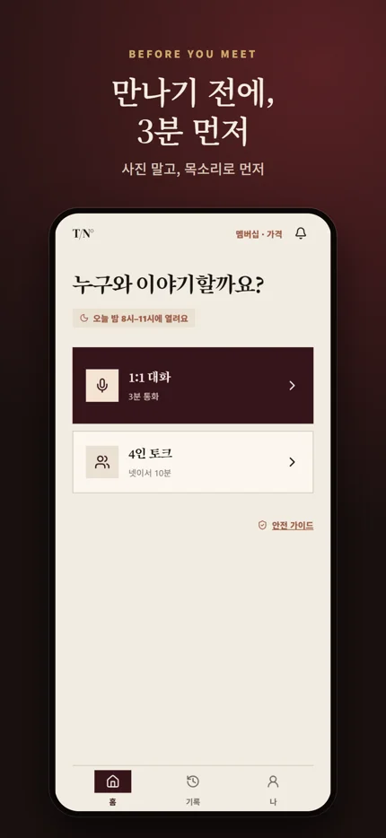
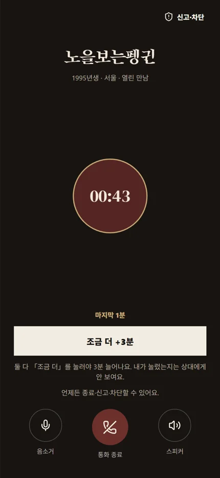
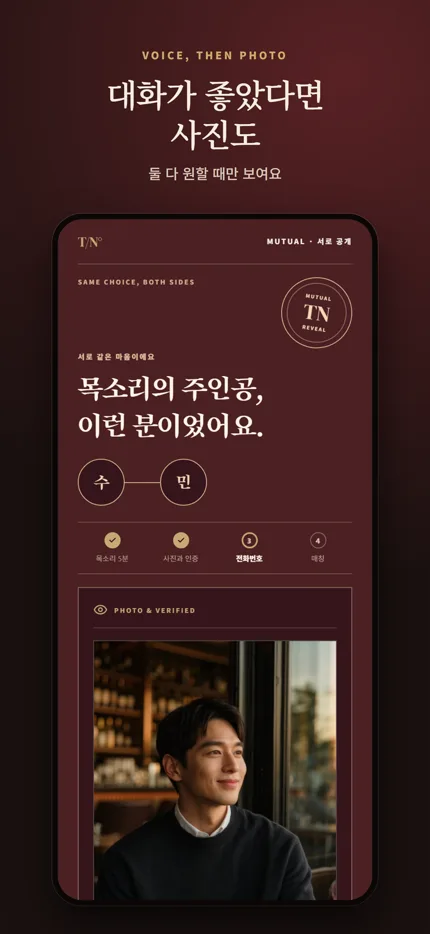
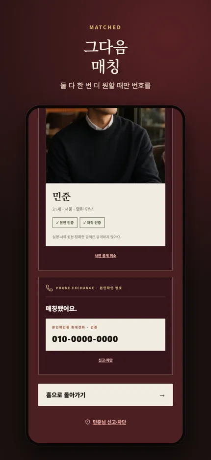

FRIENDS EDITION
✓편한 친구처럼
같은 성별·다른 성별·모든 성별 중 원하는 범위를 고르고, 부담 없이 오늘의 이야기를 나눠요.
초대는 자동 승인이 아니라, 가입 심사에 반영되는 신뢰 신호입니다. 신청 후 아래 코드를 앱의 멤버십 화면에 입력해주세요.
BEFORE YOU MEET
사진 보고 나갔다가 첫 3분에 소중한 저녁시간 날린 적 있으시죠?
목소리로 3분, 말이 통하면 사진, 그다음 번호.

끝없는 프로필과 읽씹 대신, 약속한 시간에 같은 목적을 가진 한 사람과 이야기합니다.
WHAT ARE YOU LOOKING FOR?
같은 성별·다른 성별·모든 성별 중 원하는 범위를 고르고, 부담 없이 오늘의 이야기를 나눠요.
서로의 선호가 맞는 사람끼리, 사진보다 목소리로 천천히 알아가요.
“사진보다 목소리가 오래 기억되는 밤이 있어요.”
VOICE · PHOTO · NUMBER



SAFE BY DESIGN
본인·성인 확인을 거친 멤버만 통화에 참여합니다.
둘 다 원하기 전까지 전화번호를 보여주지 않습니다.
한쪽의 선택은 알리지 않고, 둘 다 원할 때만 다음 단계가 열립니다.
불편한 통화는 바로 끝내고 차단할 수 있습니다.
FIRST ISSUE · KOREA
전국에서 신청을 받고, 안전하고 충분한 통화 풀이 준비된 지역부터 순차적으로 초대합니다.